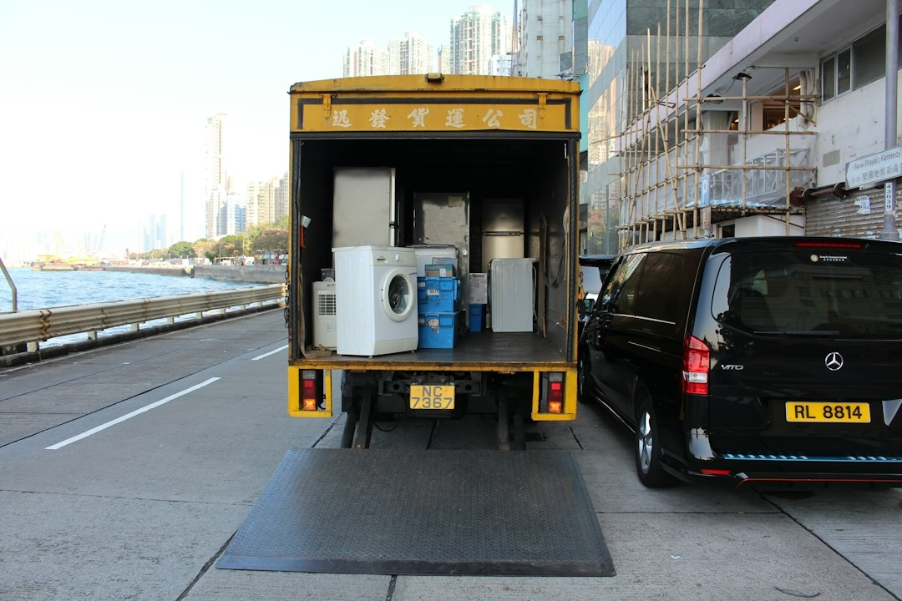
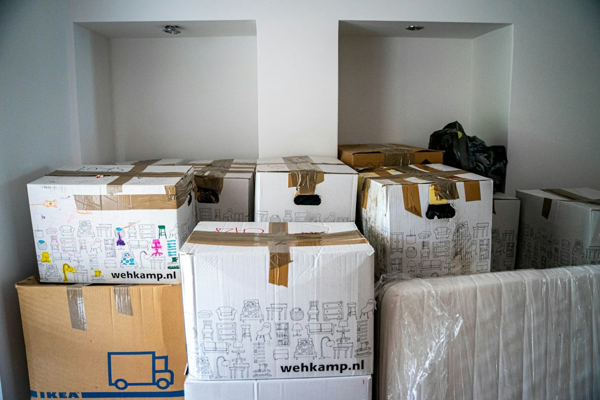
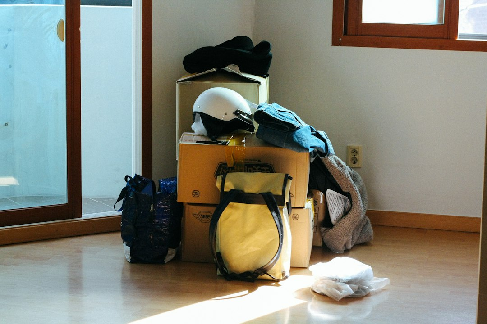

Privatumzüge gehören zu den zentralen Leistungen der Umzugsfirma Zürich. Das Unternehmen unterstützt bei Wohnungswechseln innerhalb derselben Stadt ebenso wie bei Umzügen in andere Gemeinden oder Kantone. Die Transportarbeiten werden entsprechend der Haushaltsgrösse, der Entfernung und den örtlichen Gegebenheiten geplant. Dabei können zusätzliche Dienstleistungen individuell vereinbart werden.
Die Limmat-Zürich Umzug GmbH bietet kostenlose und unverbindliche Offerten. Kunden können ihre Anfrage über ein Onlineformular einreichen, das in ungefähr zwei Minuten ausgefüllt werden kann. Nach Angaben des Unternehmens erfolgt eine Rückmeldung innerhalb von 24 Stunden. Eine kostenlose Vor-Ort-Besichtigung ermöglicht bei Bedarf eine genauere Einschätzung des geplanten Umzugs.
Ein Umzug in Zürich kann aufgrund der örtlichen Gegebenheiten unterschiedliche Anforderungen stellen. In Quartieren wie Zürich Altstadt, Oerlikon, Wiedikon, Seefeld, Enge und Altstetten unterscheiden sich die Zufahrtsmöglichkeiten und Gebäudestrukturen. Eine erfahrene Umzugsfirma Zürich berücksichtigt diese Faktoren bei der Planung. Besonders bei engen Treppenhäusern und begrenzten Parkmöglichkeiten ist eine sorgfältige Vorbereitung hilfreich.
professionelle umzugshelfer zürich

Die Kombination aus Umzug und Reinigung bietet praktische Vorteile. Nach dem Abtransport der Möbel können die bisherigen Räumlichkeiten für die Wohnungsübergabe vorbereitet werden. Kunden müssen dadurch weniger unterschiedliche Dienstleister koordinieren. Die Limmat-Zürich Umzug GmbH bietet beide Leistungen aus einer Hand und unterstützt bei der Terminplanung.
Eine geeignete Verpackung unterstützt den sicheren Transport. Geschirr, Glaswaren, elektronische Geräte und andere empfindliche Gegenstände sollten vor Stössen und Druck geschützt werden. Auch Möbel können während des Transports geeignete Schutzmassnahmen benötigen. Die erfahrenen Umzugshelfer von Limmat-Zürich Umzug achten auf eine sorgfältige Handhabung des Umzugsguts.
Der Versicherungsschutz gehört ebenfalls zum professionellen Angebot. Das Unternehmen verfügt nach eigenen Angaben über eine Transportversicherung und eine Betriebshaftpflichtversicherung. Kunden können sich vor der Beauftragung über die geltenden Versicherungsbedingungen informieren. Die Kombination aus Versicherungsschutz und fachgerechter Arbeitsweise unterstützt einen professionellen Möbeltransport.
Auch schweizweite Umzüge gehören zum Angebot. Ein Wohnungswechsel von Zürich nach Basel, Bern, Luzern, Zug oder in einen anderen Kanton kann mit einem professionellen Umzugsservice organisiert werden. Die Limmat-Zürich Umzug GmbH unterstützt Kunden bei der Planung und Durchführung und berücksichtigt die Anforderungen längerer Transportstrecken.
Die Limmat-Zürich Umzug GmbH unterstützt Privatpersonen, Familien und Unternehmen bei Umzügen in Zürich, im Kanton Zürich, in der gesamten Schweiz und im Ausland. Kostenlose Umzugskisten, transparente Gratisofferten, flexible Termine und professionelle Zusatzleistungen ergänzen den klassischen Umzugsservice.
Auch Umzüge an Wochenenden und Feiertagen sind möglich. Die Limmat-Zürich Umzug GmbH erhebt nach eigenen Angaben dafür keine zusätzlichen Aufpreise. Diese Flexibilität kann besonders für Berufstätige und Unternehmen interessant sein. Kurzfristige Termine sind ebenfalls nach Verfügbarkeit möglich.
Die umweltgerechte Entsorgung gehört ebenfalls zum umfassenden Umzugsservice. Bei einem Wohnungswechsel werden häufig Gegenstände aussortiert, die nicht mehr benötigt werden. Die Limmat-Zürich Umzug GmbH unterstützt bei der Entsorgung von Möbeln und anderen Materialien. Die Dienstleistung kann mit einem Privatumzug, Firmenumzug oder einer Räumung verbunden werden.
Eine gute Umzugsplanung beginnt mit der Festlegung des gewünschten Termins. Anschliessend sollten die zu transportierenden Gegenstände erfasst und die benötigten Dienstleistungen ausgewählt werden. Die Limmat-Zürich Umzug GmbH unterstützt bei der Organisation und erstellt eine individuelle Offerte. Dadurch können die vereinbarten Arbeiten frühzeitig abgestimmt werden.
Die Limmat-Zürich Umzug GmbH bietet ausserdem sichere und trockene Einlagerungsmöglichkeiten. Eine Möbeleinlagerung in Zürich kann sinnvoll sein, wenn zwischen dem Auszug aus der bisherigen Wohnung und dem Einzug in die neue Immobilie eine zeitliche Lücke besteht. Auch bei Renovierungsarbeiten oder längeren Auslandsaufenthalten kann zusätzlicher Lagerraum benötigt werden.

Bei einem Büroumzug ist eine sorgfältige Koordination besonders wichtig. Schreibtische, Bürostühle, Aktenschränke, Regale und Konferenztische müssen fachgerecht transportiert werden. Die Umzugshelfer unterstützen beim Verladen und Entladen und können die Demontage und Montage von Büromöbeln übernehmen. Eine strukturierte Durchführung hilft dabei, die Einrichtung der neuen Geschäftsräume vorzubereiten.
Die Limmat-Zürich Umzug GmbH bietet ihre Dienstleistungen auch in der Region Zürich an. Dazu gehören unter anderem Winterthur, Uster, Dübendorf, Schlieren, Dietikon, Wallisellen, Kloten, Adliswil, Horgen und Thalwil. Das Unternehmen unterstützt Kunden bei Umzügen zwischen verschiedenen Gemeinden und organisiert die vereinbarten Transportleistungen entsprechend der jeweiligen Strecke.
Wer eine professionelle Umzugsfirma Zürich sucht, kann bei Limmat-Zürich Umzug eine kostenlose und unverbindliche Offerte anfordern. Das Unternehmen bietet individuelle Beratung und umfassende Dienstleistungen für einen sorgfältig geplanten Wohnungswechsel. Mit erfahrenen Umzugshelfern, transparenten Konditionen und einer zuverlässigen Organisation ist die Limmat-Zürich Umzug GmbH Ansprechpartner für private und gewerbliche Umzüge in Zürich und Umgebung.
Eine Umzugsreinigung in Zürich kann Küchen, Badezimmer, Fenster, Böden und weitere Bereiche umfassen. Die genauen Arbeiten werden entsprechend dem vereinbarten Leistungsumfang durchgeführt. Besonders bei grösseren Wohnungen kann eine professionelle Reinigung den zeitlichen Aufwand für die Kunden reduzieren. Die Abnahmegarantie ergänzt das angebotene Reinigungspaket.
Eine weitere Dienstleistung ist die professionelle Umzugsreinigung mit Abnahmegarantie. Nach einem Wohnungswechsel müssen Mietwohnungen häufig gründlich gereinigt werden. Die Limmat-Zürich Umzug GmbH bietet einen Reinigungsservice, der auf die Anforderungen einer Wohnungsübergabe ausgerichtet ist. Kunden können die Endreinigung mit dem Möbeltransport kombinieren.
Auch Entrümpelungen und Haushaltsauflösungen können professionelle Unterstützung erfordern. Keller, Estriche, Garagen und Abstellräume enthalten häufig zahlreiche Gegenstände, die entfernt werden müssen. Die Limmat-Zürich Umzug GmbH bietet entsprechende Entsorgungsleistungen und unterstützt Kunden bei der Organisation der Räumung.
Die Möbelmontage gehört zu den zusätzlichen Leistungen des Unternehmens. Grössere Schränke, Betten, Regale und Tische müssen häufig vor dem Transport demontiert werden. Die Limmat-Zürich Umzug GmbH unterstützt bei diesen Arbeiten und übernimmt die fachgerechte Montage am neuen Standort. Dadurch können Kunden ihren Wohnungswechsel mit weniger eigenem Montageaufwand organisieren.